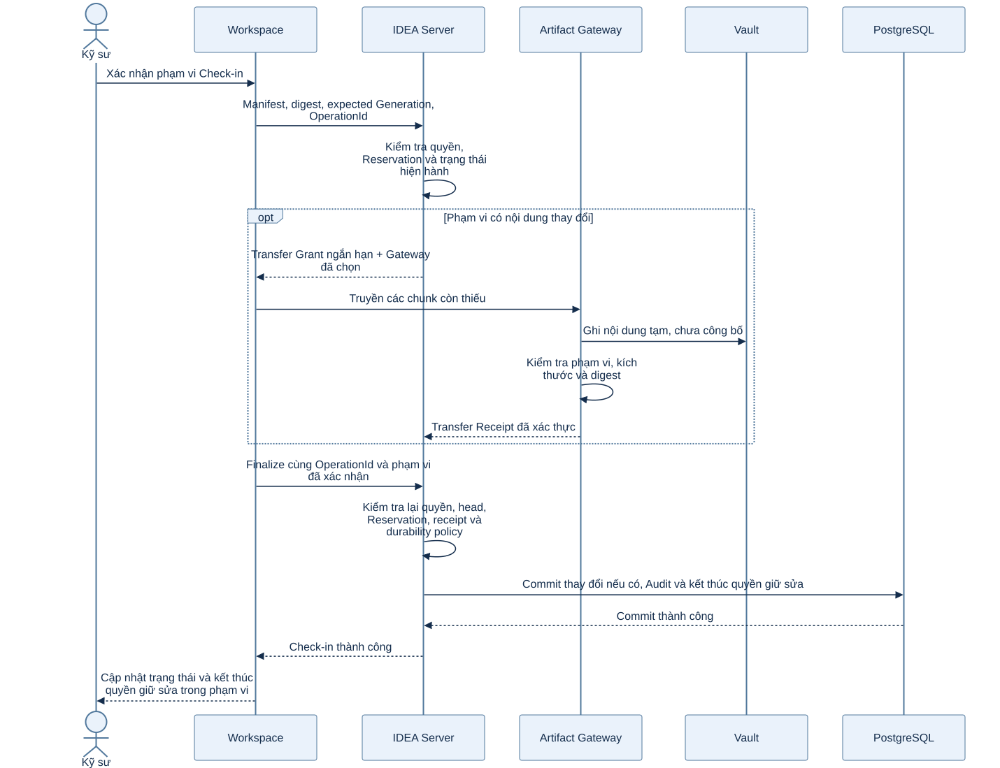

File lớn truyền trực tiếp qua Gateway. Server kiểm tra quyền và quyết định kết quả nghiệp vụ.
43 hình từ nguồn hiện hành: 3 hình dành cho báo cáo Word và 40 controlled views. Bấm vào hình hoặc tên để mở SVG ở kích thước đầy đủ.
Tổng quan luồng điều khiển và luồng truyền file của IDEA DDM
MGMT-VLT-001 · Data-flow view; bản giản lược dành cho quản lý (`Management simplification`). · NEW
Kỹ sư dùng Client để gửi lệnh nghiệp vụ tới IDEA Server và truyền file lớn trực tiếp qua Artifact Gateway tới một Vault location đã chọn. PostgreSQL lưu trạng thái có thẩm quyền. Các Vault có thể replication theo policy và vẫn cần backup độc lập.

Mở SVG đầy đủ ↗ · Mở PNG ↗
Trình tự Check-in file lớn qua Artifact Gateway
MGMT-VLT-002 · UML Sequence Diagram; bản giản lược dành cho quản lý (`Management simplification`). · NEW
Sau khi xác nhận phạm vi, Workspace gửi manifest và OperationId tới Server. Nếu có thay đổi, Workspace nhận grant và truyền chunk trực tiếp qua Gateway tới Vault. Gateway gửi receipt; Workspace yêu cầu finalize cùng thao tác. Server kiểm tra lại quyền, trạng thái và policy về độ bền trước khi commit và kết thúc quyền giữ sửa. Không có thay đổi thì không tạo Generation mới, nhưng Check-in thành công vẫn kết thúc quyền giữ sửa.

Mở SVG đầy đủ ↗ · Mở PNG ↗
Một Artifact logic có nhiều Artifact Location
MGMT-VLT-003 · Logical data relationship view; bản giản lược dành cho quản lý (`Management simplification`). · NEW
Một Artifact với một identity và digest liên kết tới nhiều location vật lý ở các Vault. Storage policy điều khiển location và replication repair; backup độc lập nằm ngoài replica set.

Mở SVG đầy đủ ↗ · Mở PNG ↗
{kind=link}
{kind=link}
{kind=link}
{kind=link}
{kind=link}
{kind=link}